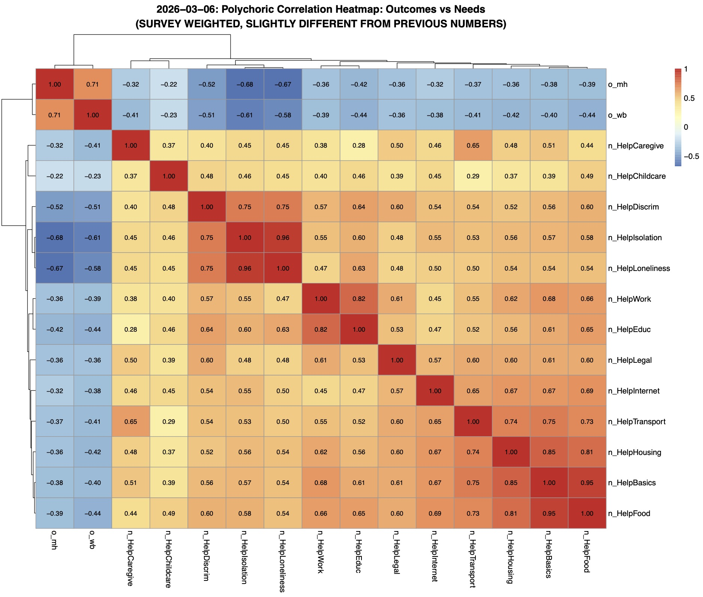
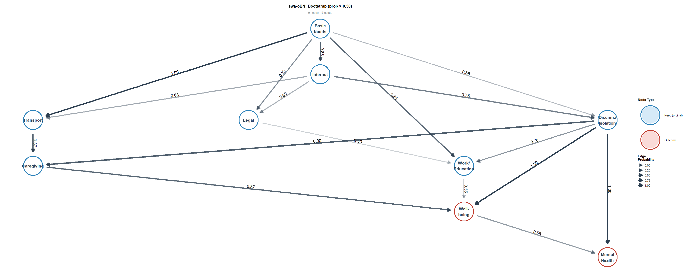

A Survey-Weighted Ordinal Bayesian Network Approach
Note

Note
| Node | Type | Levels | Source |
|---|---|---|---|
| Basic Needs | Composite | 3 | PayBasics + LackFood + HaveHousing |
| Work/Education | Composite | 3 | FindWork + LackEduc |
| Discrim./Isolation | Composite | 3 | Discrim + Isolation + Loneliness |
| Caregiving | Item | 3 | HelpCaregive |
| Childcare | Item | 3 | HelpChildcare |
| Transport | Item | 3 | HelpTransport |
| Internet | Item | 3 | HelpInternet |
| Legal | Item | 3 | HelpLegal |
| Well-being | Outcome | 4 | o_wb |
| Mental Health | Outcome | 5 | o_mh |
Note
Note

Note
Question: what threshold is a good cutoff for this type of network?
Note
Findings:In addition to Soumik’s takeaways, we may want to include information in discussion about connection between caregiving and well-being yet caregiving not a screening priority in routine practice (e.g., not a measure in ACORN, Accountable Health Communities (AHC))
Veteran Social Needs-Outcomes Causal Discovery